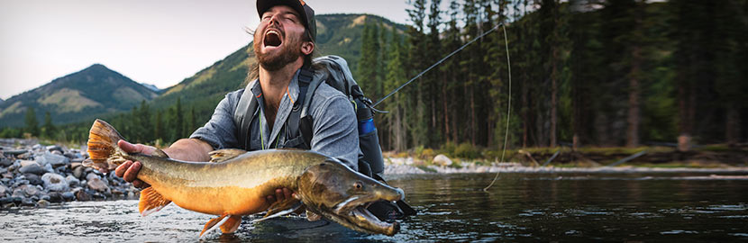

 To catch the biggest fish you need to have the best gear. Orvis rods and reels will have you casting farther than ever before. New waders are more durable and comfortable than ever before with our new waterproof comfort technology. Our premium products will not only have you looking good but they will have you slaying the hogs out on the water.